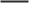

Proyectos
nuriva
Marca de Identidad
Branding
Sushi Lovers
Revista InDesign
Diseño Gráfico
Nihon Fest
App & Landing Page
Diseño UX/UI
DoctorPad
App Tarjeta Sanitaria
Diseño UX/UI
Nuria Rivas
Rediseño Web Portfolio
UX/UI&Front-End
Semana Santa
Web de fotografías
WordPress
Sobre Mí
Se podría decir que soy un culo inquieto, me gusta aprender todo lo que se pueda.
Desde mi pasión por la fotografía ,como cualquier dato curioso sobre historia o cultura friki, hasta el diseño gráfico , UX/UI y el desarrollo front-end , el conocimiento y el aprendizaje siempre son bien recibidos.
Mis proyectos vienen desde el cariño añadiendo un poquito de salero malagueño y aplicando las herramientas que manejo. Si necesito algo que no sé hacer me busco las habichuelas para sacarlo.
Recuerda beber "agüita" y tomarte un break para respirar profundo.